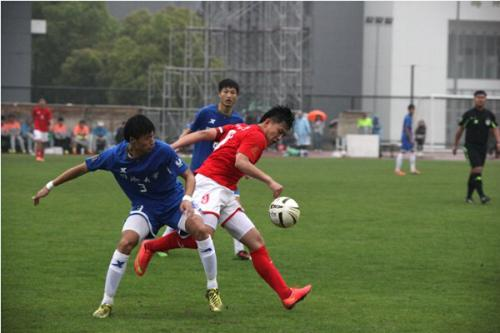
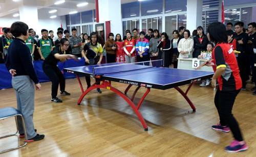

社团
大学里的社团种类很多如各种学术、社会问题研究会，文艺社、棋艺社、骑行社、篆刻社、歌咏队、篮球队、足球队、排球队、乒乓球社团、影视评论社、摄影社、电竞社等。大学社团目的是活跃学校学习氛围，提高学生自治能力，丰富课余生活；交流思想，切磋技艺，互相启迪，增进友谊。

比赛
如乒乓球友谊赛，运动员们在比赛过程中，挥汗如雨，积极拼搏，不到最后一刻决不放弃的精神深深地打动了在场的每一个人。本次比赛在一片和谐欢笑中圆满结束。这不仅给了学生们相互交流、切磋球技的机会，还提供了一个展示自己，不断提高的机会，同时也促进了各个班级的进一步合作，为以后工作的顺利开展奠定了扎实的基础。
